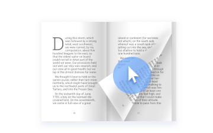

This week’s reading revolved around a particularly interesting topic: What exactly is the relationship between us, the media, machines, and even the Earth? I feel like it’s making me rethink how to better connect technology with ourselves.

FlippingBook. (n.d.). [Online image]. Available at: https://flippingbook.com/page-flip-pdf (Accessed: 19 February 2025)
After I read the chapter “Immediacy, Hypermediacy and Remediation” written by Bolter and Grusin I have learned several core concepts of new media, which have enabled me to have a clearer understanding of how the media influences our perception and experience:
- Remediation: New media often “quotes” old media. For instance, web pages mimic the layout of newspapers, and Instagram imitates Polaroid photos.
- Immediacy: Users are not aware of the existence of the media and it seems as if they are “directly” immersed in the content itself (for example, VR makes you feel as if you are standing right on the scene).
- Hypermediacy: The media itself is prominently displayed. Examples include pop-ups, interfaces, buttons, and the split screens of social apps.
I then start to notice that many digital media are actually “imitating” other media. For example, mobile news apps resemble newspapers, VR attempts to recreate the real world, and social media interfaces often deliberately mimic the effect of “turning pages”. They stated that new media don’t completely erase the old ones; instead, they enclose and absorb them, giving us an experience of being both immersed and detached. This reminds me of when I was working on an interface design. Although it was digital, I used pixelated fonts and film like borders. In fact, I was “remediating” past styles.
Empowered Automation. (n.d.). [Online image]. Available at: https://www.empoweredautomation.com/human-machine-interfaces (Accessed: 19 February 2025)
Haraway’s “Cyborg Manifesto” is extremely shocking. She said that each of us is actually a “cyborg” not just in a physiological sense, but also in terms of society, culture, and technology, we are all hybrids. For example, this morning I was woken up by my mobile phone, listened to music recommended by AI, sent voice messages to my friends, and edited files in the cloud. I’m no longer living as a “pure human being”, but rather as a complex of “human-machine-network”. She also emphasized breaking traditional boundaries, such as not differentiating between genders and between the natural and the artificial. The inspiration this brings to creative computing is that we don’t need to be restricted by existing frameworks, but can explore new hybrid forms.
Harvard Business School Online. (n.d.). [Online image]. Available at: https://online.hbs.edu/blog/post/data-ethics (Accessed: 19 February 2025)
Although Zylinska’s article has a calm tone, it is also very powerful. She put forward the concept of “minimal ethics”, which means that we can’t change the whole world, but we can start with our own small decisions. For example, what data you choose to use, what kind of interaction you create, and what kind of images you display are actually all “tiny responses” to the world. I particularly like her attitude of being “not grandiose but responsible”. As a creative computing student, I have also come to realize that technical works are not pure neutral expressions, it also tells a story about how we see things.
These three articles have shown me that creating isn’t just about doing a good job make it look nice, but also about making it meaningful and making choices. It’s not a relationship of using and being used between us and technology, instead, we should combine with it and evolve together.
Reading list
- Bolter & Grusin – Remediation: Understanding New Media, Chapter 1: Immediacy, Hypermediacy, and Remediation
- Haraway, D. (1985). A Cyborg Manifesto
- Zylinska, J. (2014). Minimal Ethics for the Anthropocene, Chapter 1: We Are All Dead